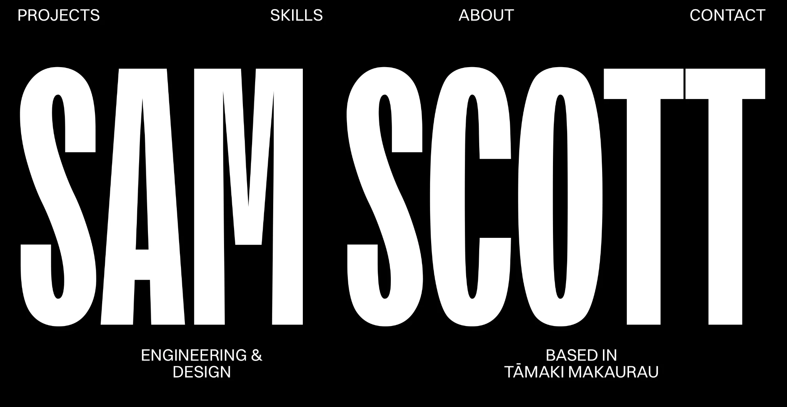
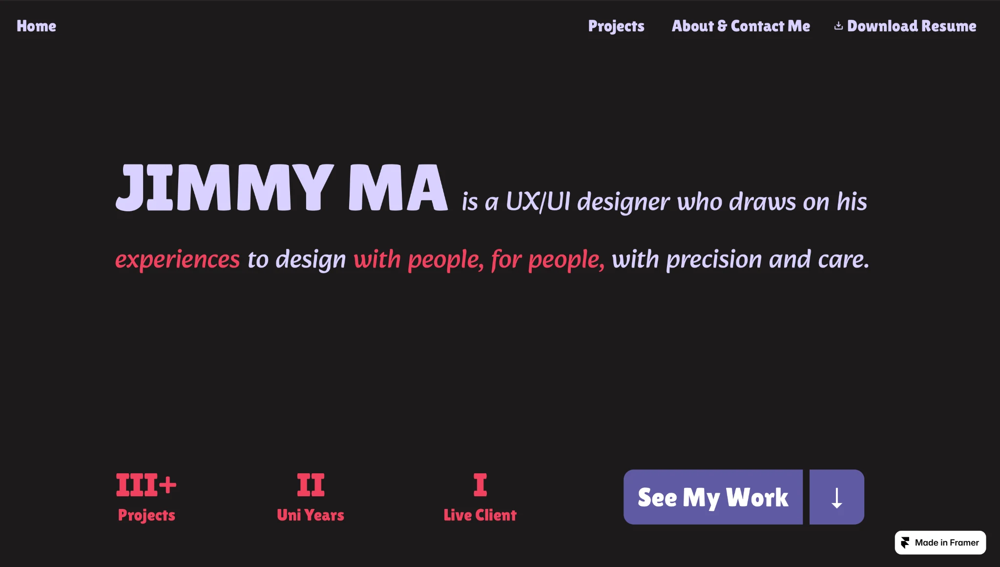

01 / RESEARCHLooking at
Looking at
other portfolios.
I began by looking at how different designers introduce themselves online. Sam Scott uses oversized typography and bold contrast to create a strong first impression, while Jimmy Ma presents clear personal information and straightforward navigation.
I wanted to take something from both approaches. The site needed a recognisable visual identity, but visitors should still be able to move through my work and understand my process without unnecessary steps.


What I took forward
Visual identity
One memorable introduction instead of filling the homepage with disconnected graphics.
What I took forward
Clear navigation
A simple route to projects, skills, and personal information.
What I took forward
Content first
Make the finished work and the process behind it equally accessible.